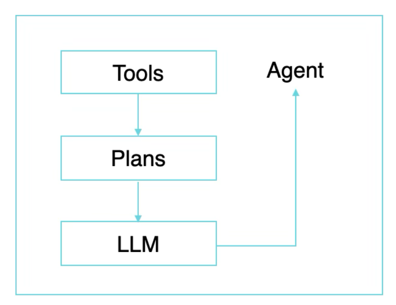
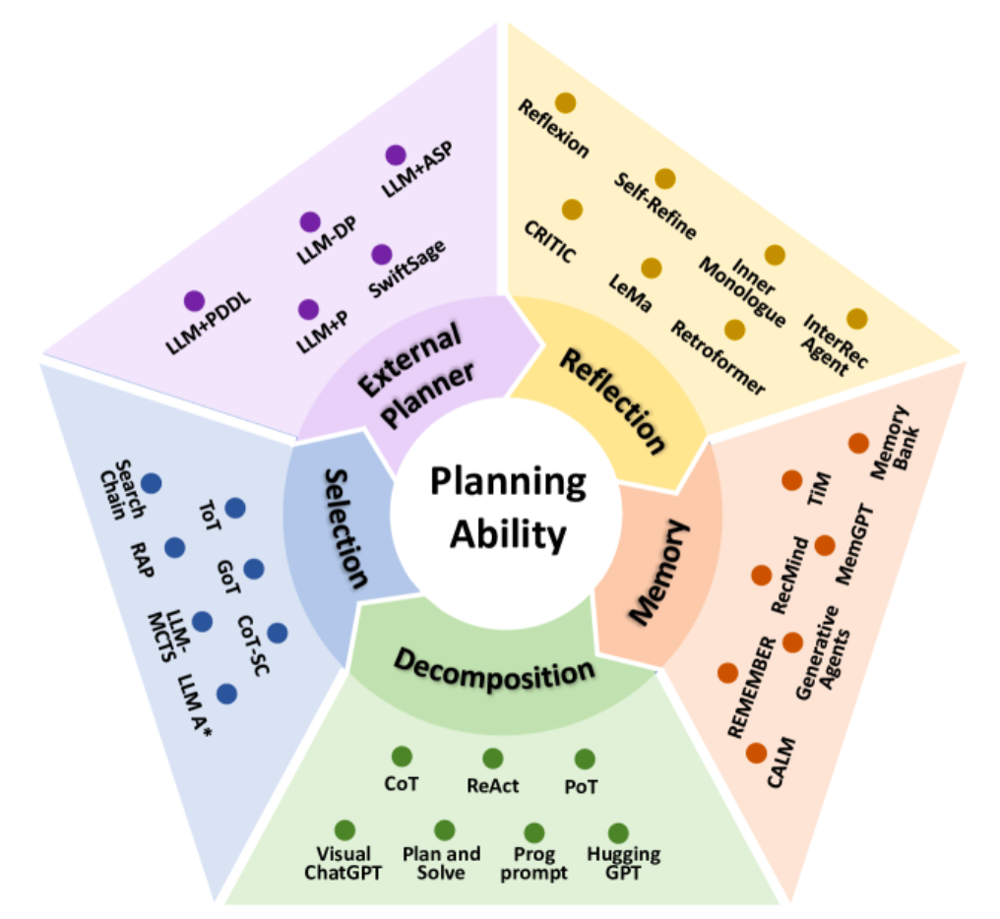
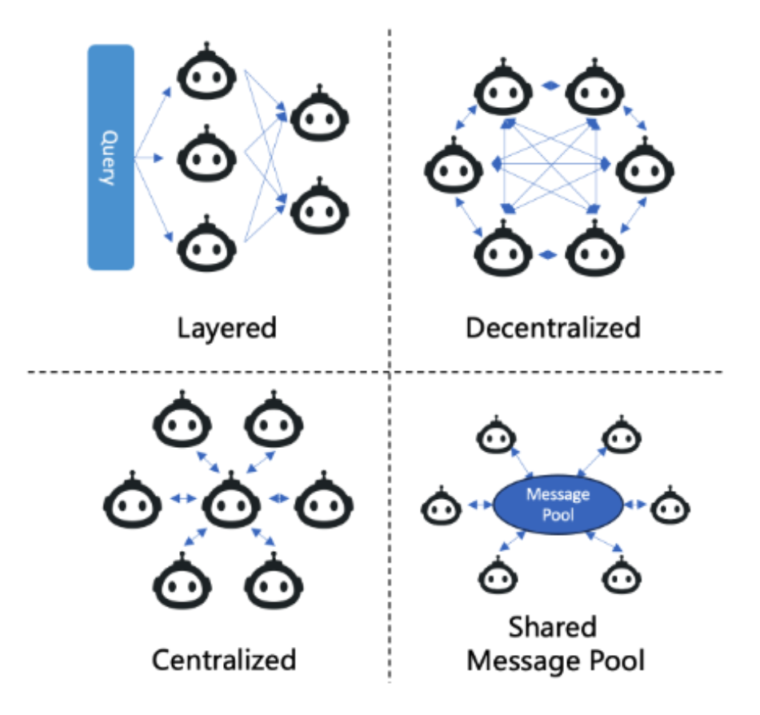

Product Vision
Building a transformative no-code/low-code AI Agent service that empowers users to create, deploy, and manage intelligent agents seamlessly.
We are embarking on a transformative journey to build a no-code/low-code AI Agent service that empowers users of all technical backgrounds to create, deploy, and manage intelligent agents seamlessly. This service is designed to democratize AI agent development by allowing users to define their systems layer by layer using predefined templates and user-friendly interfaces. From defining individual tools to multi-agent collaboration, the service ensures flexibility, scalability, and ease of use.
At the core, this service will:
In a LLM-powered autonomous agent system, LLM functions as the agent's brain, complemented by several key components:
The agent learns to call external APIs for extra information that is missing from the model weights (often hard to change after pre-training), including current information, code execution capability, access to proprietary information sources and more.

Our service should enable users to construct AI agents by defining and integrating various components layer by layer. Allowing for modularity and flexibility in agent design. The key layers include:
Tools are the fundamental building blocks of the system. Users will start by defining tools using a predefined template. These tools could be:
Each tool will be given:
The planning layer defines the logic that drives agent behavior.
Here is more comprehensive overview of the planning abilities:

This method involves breaking down complex tasks into smaller, more manageable subtasks. By decomposing a task, the agent can plan for each subtask individually, simplifying the overall planning process. This is akin to a divide-and-conquer strategy.
In this approach, the agent generates multiple potential plans for a given task and then selects the most appropriate one using search algorithms, such as tree search methods. This encourages the agent to consider various strategies before committing to a specific plan, enhancing decision-making by evaluating alternative options.
Here, the planning process is enhanced by incorporating an external planner module. The LLM formalizes the task and provides necessary information to the external planner, which then generates efficient and feasible plans. This addresses issues like computational efficiency and plan feasibility that might be challenging for the LLM alone.
This methodology focuses on iterative improvement. After generating an initial plan, the agent reflects on any failures or inefficiencies and refines the plan accordingly. This reflective process allows the agent to learn from mistakes and continuously improve its planning ability by updating its approach based on feedback.
In this approach, the agent utilizes an external memory module that stores valuable information such as commonsense knowledge, past experiences, or domain-specific data. During planning, the agent retrieves relevant information from this memory to inform and enhance its decision-making process, leading to more informed and effective plans.
Large language models (LLMs) will be integrated into the service to enhance agent capabilities. Users can define LLMs through an API endpoint, selecting models based on their use case, such as:
Predefined API endpoints will enable users to call LLMs and use them within their workflows to enhance agent performance.
Once tools and plans are defined, users can build agents by assembling these components. Agents will be defined using:
Collaboration between agents is essential for solving complex, multi-step problems. The service allows users to define multi-agent systems where agents communicate, share information, and coordinate actions.

The communication between agents in Large Language Model-Multi-Agent (LLM-MA) systems is crucial for supporting collective intelligence. Agent communication can be analyzed from the following perspectives:
This refers to the styles and methods through which agents interact. The primary paradigms include:
Agents collaborate towards a common goal, sharing information to enhance a collective solution.
Agents engage in argumentative exchanges, presenting and defending their viewpoints while critiquing others. This is effective for reaching consensus or refining solutions.
Agents pursue their individual goals, which may conflict with those of other agents.
This defines how communication networks are organized within the multi-agent system. Four typical structures are:
This can be done using a drag-and-drop interface where users can visually construct workflows that will be converted into JSON for backend processing. Workflow can include tools and agents.
Workflow will be configurable with:
By providing a no-code/low-code platform, we aim to make AI agent development accessible to everyone—from technical developers to business users—enabling rapid innovation and democratizing the power of intelligent automation.